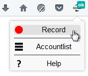
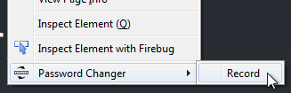
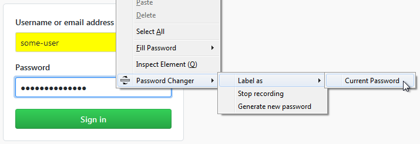
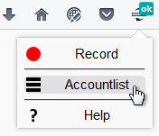
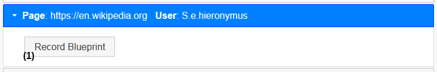
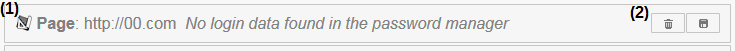

Help
Generate passwords
Right click on an input field and select the option "Generate new password" from the context menu to use the add-on's password generator.
After that, you can select the option "Use last generated password" from the context menu, when right-clicking on an input field.
This allows to fill in a form that requires to repeat the password.
The generate password option can be used at any time. It does not matter if a blueprint recording is taking place or not.


Record a blueprint
All actions during recording must be done by clicking. The only exception is text input.
- Open the website you want to record a blueprint for.
- Use the "Record" option from the add-on menu or right click and select the the "Record" option from the context menu.

- Navigate to the login form. Alternatively, the recording can be started at this point, but not later.
The login must be part of the recording.
- Input your login data and label the input fields as "Username/Email" and "Current Password" respectively before sending the data.
When labeled correctly, the input fields have a yellow background.

- Navigate to the change password form.
- Input current and new password and label the input fields analogous to the login form before sending the data.
- Finish changing the password and log out.
- Stop the recording with the corresponding option from the add-on menu or do a right click and use the context menu to do so.
Accountlist
The Accountlist is opened by clicking on "Accountlist" in the add-on menu.

The button in the upper right corner allows to import blueprints.
There are three types of entries on the list:
- There is login data stored in the firefox password manager for a website and a blueprint exists for that site.

- An icon indicates that a blueprint exists for this website (1).
- When clicking on (2), the add-on automatically changes the password on this site, using a generated password.
- A click on (3) opens a tab with the change password form of the website. The password can than be changed manually.
- The button (4) allows to record a new blueprint for the website. The old blueprint will be overwritten in this case.
- Deleting and exporting the blueprint can be done with (5).
- There is login data stored in the firefox password manager for a website, but there is no corresponding blueprint.

- A click on (1) starts the recording of a new blueprint for this website.
- There is a blueprint for a website, but no login data is stored in the firefox password manager for this site.
This can happen when a blueprint has been imported.

- An icon indicates that a blueprint exists for this website (1).
- Using (2), the blueprint can be deleted or exported.